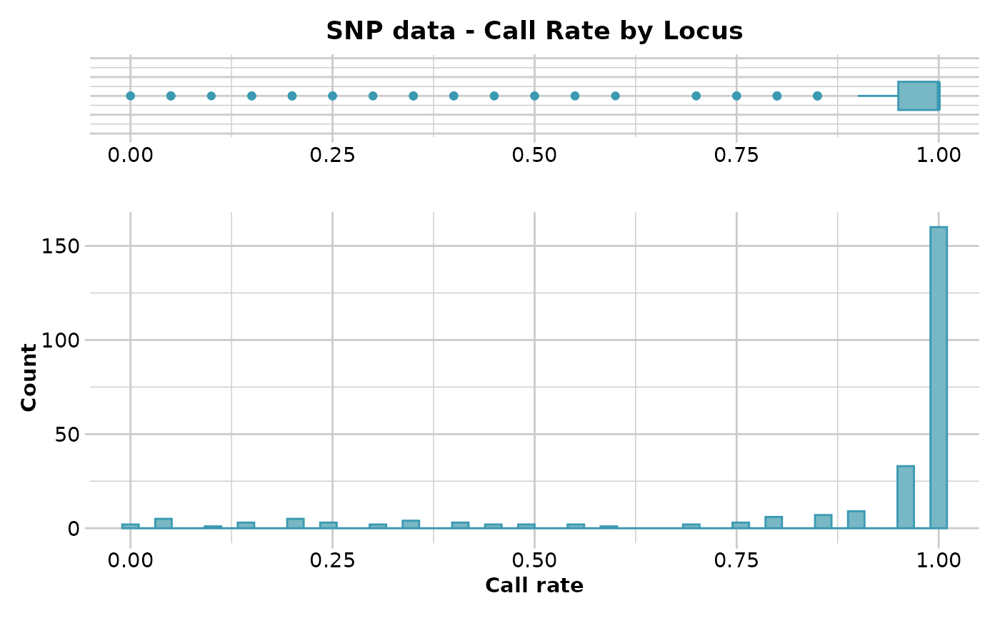
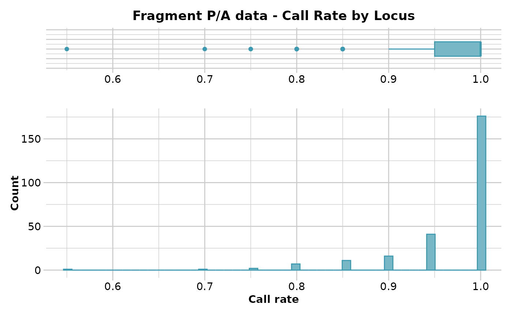
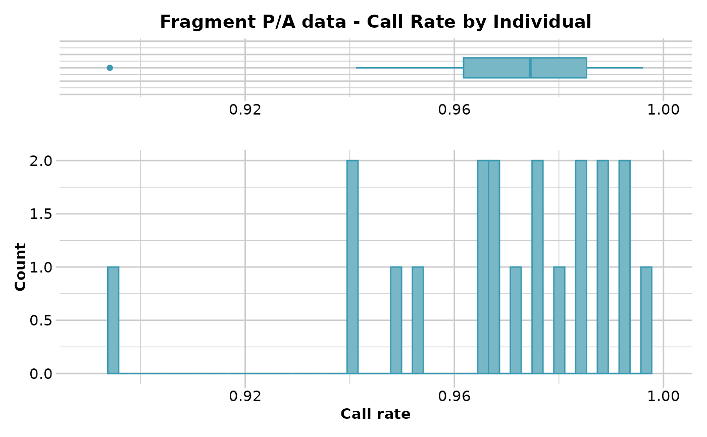

Reports summary of Call Rate for loci or individuals
gl.report.callrate.RdSNP datasets generated by DArT have missing values primarily arising from failure to call a SNP because of a mutation at one or both of the restriction enzyme recognition sites. P/A datasets (SilicoDArT) have missing values because it was not possible to call whether a sequence tag was amplified or not. This function tabulates the number of missing values as quantiles.
Usage
gl.report.callrate(
x,
method = "loc",
by_pop = FALSE,
plot.out = TRUE,
plot_theme = theme_dartR(),
plot_colors = two_colors,
bins = 50,
save2tmp = FALSE,
verbose = NULL
)Arguments
- x
Name of the genlight object containing the SNP or presence/absence (SilicoDArT) data [required].
- method
Specify the type of report by locus (method='loc') or individual (method='ind') [default 'loc'].
- by_pop
Whether report by population [default FALSE].
- plot.out
Specify if plot is to be produced [default TRUE].
- plot_theme
User specified theme [default theme_dartR()].
- plot_colors
Vector with two color names for the borders and fill [default two_colors].
- bins
Number of bins to display in histograms [default 25].
- save2tmp
If TRUE, saves any ggplots and listings to the session temporary directory (tempdir) [default FALSE].
- verbose
Verbosity: 0, silent or fatal errors; 1, begin and end; 2, progress log; 3, progress and results summary; 5, full report [default 2, unless specified using gl.set.verbosity].
Details
This function expects a genlight object, containing either SNP data or SilicoDArT (=presence/absence data).
Callrate is summarized by locus or by individual to allow sensible decisions on thresholds for filtering taking into consideration consequential loss of data. The summary is in the form of a tabulation and plots.
Plot themes can be obtained from:
Resultant ggplots and the tabulation are saved to the session's temporary directory.
See also
Other report functions:
gl.report.bases(),
gl.report.diversity(),
gl.report.hamming(),
gl.report.heterozygosity(),
gl.report.hwe(),
gl.report.ld.map(),
gl.report.locmetric(),
gl.report.maf(),
gl.report.monomorphs(),
gl.report.overshoot(),
gl.report.parent.offspring(),
gl.report.pa(),
gl.report.rdepth(),
gl.report.reproducibility(),
gl.report.secondaries(),
gl.report.sexlinked(),
gl.report.taglength()
Author
Custodian: Arthur Georges -- Post to https://groups.google.com/d/forum/dartr
Examples
# SNP data
test.gl <- testset.gl[1:20,]
gl.report.callrate(test.gl)
#> Starting gl.report.callrate
#> Processing genlight object with SNP data
#> Warning: data include loci that are scored NA across all individuals.
#> Consider filtering using gl <- gl.filter.allna(gl)
#> Reporting Call Rate by Locus
#> No. of loci = 255
#> No. of individuals = 20
#> Minimum : 0
#> 1st quartile : 0.95
#> Median : 1
#> Mean : 0.8752941
#> 3r quartile : 1
#> Maximum : 1
#> Missing Rate Overall: 0.1247
#>

#> Quantile Threshold Retained Percent Filtered Percent
#> 1 100% 1.00 160 62.7 95 37.3
#> 2 95% 1.00 160 62.7 95 37.3
#> 3 90% 1.00 160 62.7 95 37.3
#> 4 85% 1.00 160 62.7 95 37.3
#> 5 80% 1.00 160 62.7 95 37.3
#> 6 75% 1.00 160 62.7 95 37.3
#> 7 70% 1.00 160 62.7 95 37.3
#> 8 65% 1.00 160 62.7 95 37.3
#> 9 60% 1.00 160 62.7 95 37.3
#> 10 55% 1.00 160 62.7 95 37.3
#> 11 50% 1.00 160 62.7 95 37.3
#> 12 45% 1.00 160 62.7 95 37.3
#> 13 40% 1.00 160 62.7 95 37.3
#> 14 35% 0.95 193 75.7 62 24.3
#> 15 30% 0.95 193 75.7 62 24.3
#> 16 25% 0.95 193 75.7 62 24.3
#> 17 20% 0.85 209 82.0 46 18.0
#> 18 15% 0.75 218 85.5 37 14.5
#> 19 10% 0.40 230 90.2 25 9.8
#> 20 5% 0.20 244 95.7 11 4.3
#> 21 0% 0.00 255 100.0 0 0.0
#>
#>
#> Completed: gl.report.callrate
#>
gl.report.callrate(test.gl,method='ind')
#> Starting gl.report.callrate
#> Processing genlight object with SNP data
#> Warning: data include loci that are scored NA across all individuals.
#> Consider filtering using gl <- gl.filter.allna(gl)
#> Reporting Call Rate by Individual
#> No. of loci = 255
#> No. of individuals = 20
#> Minimum : 0.7960784
#> 1st quartile : 0.8656863
#> Median : 0.872549
#> Mean : 0.8752941
#> 3r quartile : 0.8901961
#> Maximum : 0.9254902
#> Missing Rate Overall: 0.1247
#>
#> Quantile Threshold Retained Percent Filtered Percent
#> 1 100% 0.9254902 1 5 19 95
#> 2 95% 0.9105882 1 5 19 95
#> 3 90% 0.9027451 2 10 18 90
#> 4 85% 0.8952941 3 15 17 85
#> 5 80% 0.8909804 4 20 16 80
#> 6 75% 0.8901961 7 35 13 65
#> 7 70% 0.8901961 7 35 13 65
#> 8 65% 0.8876471 7 35 13 65
#> 9 60% 0.8792157 8 40 12 60
#> 10 55% 0.8745098 10 50 10 50
#> 11 50% 0.8725490 10 50 10 50
#> 12 45% 0.8705882 13 65 7 35
#> 13 40% 0.8705882 13 65 7 35
#> 14 35% 0.8692157 13 65 7 35
#> 15 30% 0.8666667 15 75 5 25
#> 16 25% 0.8656863 15 75 5 25
#> 17 20% 0.8619608 16 80 4 20
#> 18 15% 0.8582353 17 85 3 15
#> 19 10% 0.8545098 18 90 2 10
#> 20 5% 0.8482353 19 95 1 5
#> 21 0% 0.7960784 20 100 0 0
#>
#>
#> ind_name pop missing_data
#> UC_00126 EmmacMaclGeor 0.901960784313726
#> AA013214 EmmacMDBSanf 0.925490196078431
#> AA032760 EmmacMDBMaci 0.796078431372549
#> AA010915 EmmacMDBForb 0.854901960784314
#> AA012409 EmmacCoopEulb 0.890196078431372
#> AA012499 EmmacCoopEulb 0.874509803921569
#> AA012406 EmmacCoopEulb 0.870588235294118
#> AA012405 EmmacCoopEulb 0.866666666666667
#> AA012411 EmmacCoopEulb 0.850980392156863
#> AA011723 EmmacBurnBara 0.866666666666667
#> AA019242 EmmacBurdMist 0.909803921568627
#> AA019243 EmmacBurdMist 0.894117647058824
#> AA019240 EmmacBurdMist 0.890196078431372
#> AA019241 EmmacBurdMist 0.890196078431372
#> AA019238 EmmacBurdMist 0.886274509803922
#> AA019251 EmmacBurdMist 0.874509803921569
#> AA019237 EmmacBurdMist 0.870588235294118
#> AA019235 EmmacBurdMist 0.870588235294118
#> AA019252 EmmacBurdMist 0.862745098039216
#> AA019239 EmmacBurdMist 0.858823529411765
#> Completed: gl.report.callrate
#>
# Tag P/A data
test.gs <- testset.gs[1:20,]
gl.report.callrate(test.gs)
#> Starting gl.report.callrate
#> Processing genlight object with Presence/Absence (SilicoDArT) data
#> Reporting Call Rate by Locus
#> No. of loci = 255
#> No. of individuals = 20
#> Minimum : 0.55
#> 1st quartile : 0.95
#> Median : 1
#> Mean : 0.9688235
#> 3r quartile : 1
#> Maximum : 1
#> Missing Rate Overall: 0.0312
#>

#> Quantile Threshold Retained Percent Filtered Percent
#> 1 100% 1.00 176 69.0 79 31.0
#> 2 95% 1.00 176 69.0 79 31.0
#> 3 90% 1.00 176 69.0 79 31.0
#> 4 85% 1.00 176 69.0 79 31.0
#> 5 80% 1.00 176 69.0 79 31.0
#> 6 75% 1.00 176 69.0 79 31.0
#> 7 70% 1.00 176 69.0 79 31.0
#> 8 65% 1.00 176 69.0 79 31.0
#> 9 60% 1.00 176 69.0 79 31.0
#> 10 55% 1.00 176 69.0 79 31.0
#> 11 50% 1.00 176 69.0 79 31.0
#> 12 45% 1.00 176 69.0 79 31.0
#> 13 40% 1.00 176 69.0 79 31.0
#> 14 35% 1.00 176 69.0 79 31.0
#> 15 30% 0.95 217 85.1 38 14.9
#> 16 25% 0.95 217 85.1 38 14.9
#> 17 20% 0.95 217 85.1 38 14.9
#> 18 15% 0.95 217 85.1 38 14.9
#> 19 10% 0.90 233 91.4 22 8.6
#> 20 5% 0.85 244 95.7 11 4.3
#> 21 0% 0.55 255 100.0 0 0.0
#>
#>
#> Completed: gl.report.callrate
#>
gl.report.callrate(test.gs,method='ind')
#> Starting gl.report.callrate
#> Processing genlight object with Presence/Absence (SilicoDArT) data
#> Reporting Call Rate by Individual
#> No. of loci = 255
#> No. of individuals = 20
#> Minimum : 0.8941176
#> 1st quartile : 0.9617647
#> Median : 0.9745098
#> Mean : 0.9688235
#> 3r quartile : 0.9852941
#> Maximum : 0.9960784
#> Missing Rate Overall: 0.0312
#>

#> Quantile Threshold Retained Percent Filtered Percent
#> 1 100% 0.9960784 1 5 19 95
#> 2 95% 0.9923529 1 5 19 95
#> 3 90% 0.9921569 3 15 17 85
#> 4 85% 0.9888235 3 15 17 85
#> 5 80% 0.9882353 5 25 15 75
#> 6 75% 0.9852941 5 25 15 75
#> 7 70% 0.9843137 7 35 13 65
#> 8 65% 0.9817647 7 35 13 65
#> 9 60% 0.9780392 8 40 12 60
#> 10 55% 0.9764706 10 50 10 50
#> 11 50% 0.9745098 10 50 10 50
#> 12 45% 0.9707843 11 55 9 45
#> 13 40% 0.9686275 13 65 7 35
#> 14 35% 0.9672549 13 65 7 35
#> 15 30% 0.9647059 15 75 5 25
#> 16 25% 0.9617647 15 75 5 25
#> 17 20% 0.9521569 16 80 4 20
#> 18 15% 0.9478431 17 85 3 15
#> 19 10% 0.9411765 19 95 1 5
#> 20 5% 0.9388235 19 95 1 5
#> 21 0% 0.8941176 20 100 0 0
#>
#>
#> ind_name pop missing_data
#> UC_00126 EmmacMaclGeor 0.988235294117647
#> AA013214 EmmacMDBSanf 0.976470588235294
#> AA032760 EmmacMDBMaci 0.894117647058824
#> AA010915 EmmacMDBForb 0.952941176470588
#> AA012406 EmmacCoopEulb 0.996078431372549
#> AA012409 EmmacCoopEulb 0.980392156862745
#> AA012405 EmmacCoopEulb 0.968627450980392
#> AA012499 EmmacCoopEulb 0.968627450980392
#> AA012411 EmmacCoopEulb 0.964705882352941
#> AA011723 EmmacBurnBara 0.941176470588235
#> AA019235 EmmacBurdMist 0.992156862745098
#> AA019242 EmmacBurdMist 0.992156862745098
#> AA019241 EmmacBurdMist 0.988235294117647
#> AA019240 EmmacBurdMist 0.984313725490196
#> AA019251 EmmacBurdMist 0.984313725490196
#> AA019239 EmmacBurdMist 0.976470588235294
#> AA019252 EmmacBurdMist 0.972549019607843
#> AA019243 EmmacBurdMist 0.964705882352941
#> AA019237 EmmacBurdMist 0.949019607843137
#> AA019238 EmmacBurdMist 0.941176470588235
#> Completed: gl.report.callrate
#>